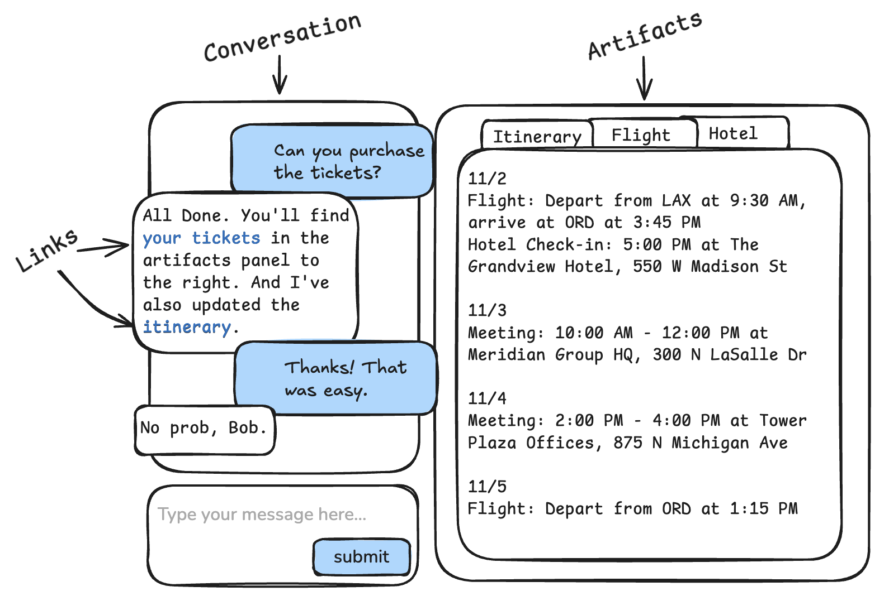

Cut the Chit-Chat with Artifacts
Most chat applications are leaving something important on the table when it comes to user experience. Users are not satisfied with just chit-chatting with an AI assistant. Users want to work on something with the help of the assistant. This is where the prevailing conversational experience falls short.
Consider pair programming. In a real, human pairing session, you and your partner discuss your objectives, talk about how the code should be modified, and then take turns actually modifying the code to implement your ideas. In this scenario – and in most where work is to be done – there is the discussion and then there are the objects of the discussion.
Contrast this with the naive AI assistant chat in which the assistant is not able to make the distinction between the discussion and the things being discussed. The assistant may come up with fantastic ideas about how to write your report or accomplish your task, but those ideas are quickly lost in the scrollback. And if there are multiple objects floating around in the discussion, then it's nearly impossible to tell the assistant which objects you're talking about and which version and how they relate to one another. At the end of the conversation, the user might find themselves scrolling back to copy out pieces of the conversation that they need.
The answer to this problem is artifacts. Artifacts, are referenceable chunks of stateful content. Artifacts are the objects of the discussion and the items being worked upon. Both the assistant and the user have the ability to create, retrieve, update, and delete these artifacts and to refer to them as needed.

In this post I will show you how to step beyond the status quo and build a better user experience with artifact-aware AI assistants.
Status Quo – No Artifacts
But first, let's take a closer look at the status quo experience, just to drive home the pain. In the demo below, the user (blue text) is a real estate agent. The real estate agent is working with an AI assistant to prepare a home listing email to send to a client. (Note: the empty panel on the right is intended to hold artifacts – we'll put it to good use in a moment.)
There's a lot going on here.
- First, the real estate agent asks the assistant to retrieve a home listing. The assistant complies – and also proactively retrieves the email template – but, unless the agent digs through the tool usage, they don't know anything more about the listing than what the assistant tells them. Is this even the right listing?
- Next, the real estate agent asks the assistant to prepare the email. The assistant complies by generating a draft in their follow-up message. The annoying part here is that there is no boundary between the assistant's text and the object that we are working on. It's just one big blob of text.
- The buyer's name and agent's names have been omitted, so the agent asks the assistant to update the email with the correct names, but also to add their name to the template. The assistant complies with the email, but ignores the request to fix the template because it doesn't know how to comply.
- If the real estate agent wants to use the email, they have to scroll around and copy-paste it out and send it themselves. This is unnecessary toil.
This is not be a good experience. The user feels lost (not able to see the original data), confused (they can't see the data that the assistant can see), and overburdened (it's on you to extract the work and apply it). And if the conversation were to continue, it would only get worse. More items will be discussed, many of them will have several versions, and all of it will be scattered in the scrollback and effectively lost.
Change is in the Air as Companies Move Toward Artifacts


Some major players are beginning to explore the potential of artifact-based interactions. Anthropic’s Artifacts and OpenAI’s Canvas allow users to describe diagrams, documents, and simple applications, which then materialize alongside the conversation. While these tools offer a glimpse into new UX possibilities, they still feel like prototypes focused more on form than function. For instance, Anthropic’s Artifacts lack direct editing capabilities, making even small adjustments cumbersome, and limiting their utility for serious work.
In contrast, companies like Cursor and Hex are using artifacts to drive tangible productivity. Cursor provides software developers with a project-aware assistant that listens to requests, suggests file changes, and lets users apply edits selectively. By clearly separating the conversation from project files, Cursor gives both the user and assistant a better mental model of the task, leading to a more productive workflow. Compare this to copy-pasting swaths of code back-and-forth into ChatGPT. (I did a lot of this before Cursor!)
Similarly, Hex empowers data scientists by combining notebooks, SQL, Python, and AI to create interactive dashboards and analytics. Its "magic" AI assistant enhances workflow by tracking both the conversation and the artifacts (e.g. dashboards and datasets). In conversation, users can "@-reference" artifacts, and instruct the assistant to generate new dashboards. In this way it's easy for analysts (and even non-analysts) to quickly piece together dashboards for their company.
The New State of the Art – Artifacts
Let's take another look at our real estate application, but this time let's make it artifact aware.
- The real estate agent starts by asking the assistant to retrieve the home listing, and it does. But this time the assistant response includes a link to one of the artifacts in the artifact panel on the right. There the agent can see the full details of the home listing. In this simple demo the artifacts are just bare JSON. But in a real application, the home listing would include a image carousel, property details, interactive maps, and integrated scheduling for viewings.
- The agent asks the assistant to create the email according to their saved template. This time two new artifacts appear. The first is the template retrieved from the
get_email_templatetool call. The second is customized email generated by the assistant which pulls the contents of the listing into the template. - Finally, the agent tells the assistant to correct the names in the email and to update the template. And the assistant does as it's told! In the conversation it provides links to the updated artifacts and explains the actions taken.
This experience is so much better than before. It's intuitive because it's how conversation work in real life: you have a conversation about your work. In the left panel is the conversation and in the right panel are the work items of work being referred to. When the assistant talks about the work, it conveniently links to the actual artifact so that you can review the full details. The assistant understands that it can create, retrieve, and update artifacts – which leads to a much more coherent interaction. And you don't have to copy-paste assets out of the scrollback. If this were a real application, you would likely even send the email directly from the app!
Now You Try!
If you have a moment, try the demo yourself and compare the difference between the two assistants:
Note that I've added some suggested comments to get you started. Make sure to let me know if you find anything interesting (... or broken).
Implementing Artifact-Aware Assistants
Artifact-aware assistants require coordinated implementation in the backend, frontend, and system message. Fortunately it's actually rather simple.
System Message
In order to build an artifact-aware assistant, the first thing you need to do is to convey to the model what artifacts are, and how they work. Here's the system message that I used to build the above demo.
Artifacts System Message
You are a helpful assistant.
<artifacts_info>
Artifacts are self-contained pieces of content that can be referenced in the conversation. The assistant can generate artifacts during the course of the conversation upon request of the user. Artifacts have the following format:
ˋˋˋ
<artifact identifier="acG9fb4a" type="mime_type" title="title">
...actual content of the artifact...
</artifact>
ˋˋˋ
<artifact_instructions>
- The user has access to the artifacts. They will be visible in a window on their screen called the "Artifact Viewer". Therefore, the assistant should only provide the highest level summary of the artifact content in the conversation because the user will have access to the artifact and can read it.
- The assistant should reference artifacts by `identifier` using an anchor tag like this: `<a href="#18bacG4a">linked text</a>`.
- If the user says "Pull up this or that resource", then the assistant can say "I found this resource: <a href="#18bacG4a">linked text</a>".
- The linked text should make sense in the context of the conversation. The assistant must supply the linked text. The artifact title is often a good choice.
- The user can similarly refer to the artifacts via an anchor. But they can also just say "the thing we were discussing earlier".
- The assistant can create artifacts on behalf of the user, but only if the user asks for it.
- The assistant will specify the information below:
- identifiers: Must be unique 8 character hex strings. Examples: 18bacG4a, 3baf9f83, 98acb34d
- types: MIME types. Examples: text/markdown, text/plain, application/json, image/svg+xml
- titles: Must be short, descriptive, and unique. Examples: "Simple Python factorial script", "Blue circle SVG", "Metrics dashboard React component"
- content: The actual content of the artifact and must conform to the artifact's type and correspond to the title.
- To create an artifact, the assistant should simply write the content in the format specified above. The content will not be visible to the user in chat, but instead will be visible in the Artifact Viewer. After creating an artifact, they can refer to it in the conversation using an anchor tag as described above. Example:
ˋˋˋ
HUMAN: Create a simple Python int sort function.
ASSISTANT: I will create a simple Python merge sort function.
<artifact identifier="18bacG4a" type="text/markdown" title="Simple Python int sort function">
def sort_ints(ints):
if len(ints) <= 1:
return ints
mid = len(ints) // 2
left = sort_ints(ints[:mid])
right = sort_ints(ints[mid:])
# Merge sorted halves
result = []
i = j = 0
while i < len(left) and j < len(right):
if left[i] <= right[j]:
result.append(left[i])
i += 1
else:
result.append(right[j])
j += 1
result.extend(left[i:])
result.extend(right[j:])
return result
</artifact>
It is available in the Artifact Viewer as <a href="#18bacG4a">Simple Python int sort function</a>.
ˋˋˋ
- The assistant can edit artifacts. They do this by simply rewriting the artifact content.
- If the user asks the assistant to edit the content of an artifact, the assistant should rewrite the full artifact (e.g. keeping the same identifier, but modifying the content and the title if needed).
- The user doesn't have to explicitly ask to edit an "artifact". They can just say "modify that" or "change that" or something similar.
- When editing the artifact, you must completely reproduce the full artifact block, including the identifier, type, and title. Example:
ˋˋˋ
HUMAN: Make that sorting function sort in descending order.
ASSISTANT: <artifact identifier="18bacG4a" type="text/markdown" title="Simple Python int sort function (descending)">
def sort_ints(ints):
if len(ints) <= 1:
return ints
mid = len(ints) // 2
left = sort_ints(ints[:mid])
right = sort_ints(ints[mid:])
# Merge sorted halves in descending order
result = []
i = j = 0
while i < len(left) and j < len(right):
if left[i] >= right[j]: # Changed <= to >= for descending order
result.append(left[i])
i += 1
else:
result.append(right[j])
j += 1
result.extend(left[i:])
result.extend(right[j:])
return result
</artifact>
ˋˋˋ
- All existing artifacts are presented in the <artifacts> tag below.
</artifact_instructions>
</artifacts_info>
<artifacts>
<artifact identifier="ab3f42ca" type="application/json" title="123 Maple Street Listing">
{
"address": "123 Maple Street",
"price": 450000,
"bedrooms": 3,
"bathrooms": 2,
"sqft": 1800,
"description": "Charming craftsman with original hardwood floors",
"yearBuilt": 1925,
"status": "For Sale"
}
</artifact>
</artifacts>
The approach here is straightforward.
-
Explain what an artifact is - a formatted blob of information that takes the form
<artifact identifier="d3adb33f" type="application/json" title="The Title"> ... content ... </artifact>Further, explain the expected format and constraints of the fields.
-
Explain that the user can see these the artifacts, and therefore the assistant does not need to recreate them in its messages. Instead, the assistant should refer to the artifact using a link formatted as
<a href="d3adb33f">link text</a>. - Explain that the assistant can both create and modify artifacts by retyping them. I've included a couple of example interactions to help the model out.
- Finally, present the existing artifacts to the assistant.
This simple system message works quite well even though the model I'm using, claude-3-5-sonnet, is not trained on artifacts. I think the reason for this is because the models are used to text that includes references. In natural language we use, nicknames and pronouns. In programming we refer to variables and packages. And in HTML – which is found in abundance in training – we use links! Thus, the model has ample training to differentiate the content of a conversation from the objects of discourse.
Backend Implementation
A naive assistant (not aware of artifacts) is implemented as a loop which keeps track of messages in a conversation. When a user submits a message, the assistant:
- Appends the user message to the existing messages.
- Sends the message list to the model and then retrieves the response message. (If you use tool calling, then that also happens here.)
- Appends the response message to the list of existing messages as the assistant message.
- Sends the assistant message back to the user.
With an artifact-aware assistant, you have to keep track of both the messages and the artifacts, so there are a couple of extra steps. When a user submits a message, the assistant:
- Extracts any artifacts from the user message (for instance if the user created a new work item) and replaces them with links.
- Generates the system message, which contains both the instructions and the list of all artifacts.
- Append the user message to the existing messages.
- Sends the system message and conversation messages to the model. In the demo we are using tool calling, so there's also a for-loop handling tool invocations.
- Extract artifacts that are either generated by the assistant or retrieved from a tool call and replace them with links.
- Send the assistant message and the artifacts back to the user.
I must make a note on artifact extraction. In my implementation, the assistant is able to modify existing artifacts. It does this by simply rewriting the artifact in the conversation. (In the demo, this is automatically replaced with links, so the user only ever sees the artifacts in the artifact panel.) Since the assistant can rewrite artifacts, this means that there can be multiple versions of the same artifacts. The way I'm handling this is to use the most recent version and delete the old version of the artifact. In a more sophisticated implementation, perhaps we would track the changes to the artifacts so that the assistant can understand their history.
Frontend Implementation
The frontend requires changes as well. Most notably, you need a place to present the artifacts. In the demo, this is a dedicated panel to the right of the conversation. If your UI doesn't have room for that, then there are alternatives. For instance, you can have a tabbed chat window that allows the user to flip over and see the artifacts. Or you can still incorporate the artifacts into the chat as embedded UI elements. This loses some of the benefit because your artifacts will scroll away as the conversation continues, but at least the artifacts aren't just blobs of text - they can be made into "smart" objects that the user can interact with.
The chat panel requires a small update. The backend will now return messages that include links to the tabs in the artifacts. Make sure that these links look nice and, most importantly, reveal the corresponding item in the artifact panel when clicked.
Next, unlike with Anthropic Artifacts, why not let the user directly edit the artifacts? Make sure to capture the edits and send the updated artifacts to the backend.
Finally, I haven't done this with my demo, but if the assistant is creating and updating artifacts, it is probably important to make sure the user can understand the changes and explicitly accept or reject them. Perhaps the best approach is to follow Cursor's lead and present the users with a GitHub-style red/green diff of the changes, and a button beside each that allows the user to accept or reject the change.
Check It Out
If you'd like to see how the sausage is made, check out the repo that implements the demo here:
https://github.com/arcturus-labs/artifact-aware-assistant
Warning, it is not production-ready code!
Conclusion
If you are curious about Artifact assistance, fortunately they're not hard to set up! The demo that I prepared for this blog post is just the tip of the iceberg. Consider other possibilities that artifacts unlock:
- Interactive artifacts that presented themselves in a malleable user interface. For instance a home listing, complete with an image carousel and an interactive map.
- Durable artifacts that save themselves to disk as they are created and updated. Such as a modified email template.
- Active artifacts that accomplish real work. Imagine an email artifact that sends itself with the click of a button.
- Rich versioning, allowing the user to traverse the changes associated with this artifact and link to the portion of the conversation where the change occurred.
I bet that you can think of plenty more things!
Special thanks to Doug Turnbull, Freddie Vargus, and Bryan Bischof for providing feedback on this post.
Hey, and if you liked this post, then maybe we should be friends!
- I just wrote a book about Prompt Engineering for LLM Applications. Maybe you'd be interested in reading it.
- Are you stumped on a problem with your own LLM application? Let me hear about it.
- I'm going to write lots more posts. Subscribe and you'll be the first to know.